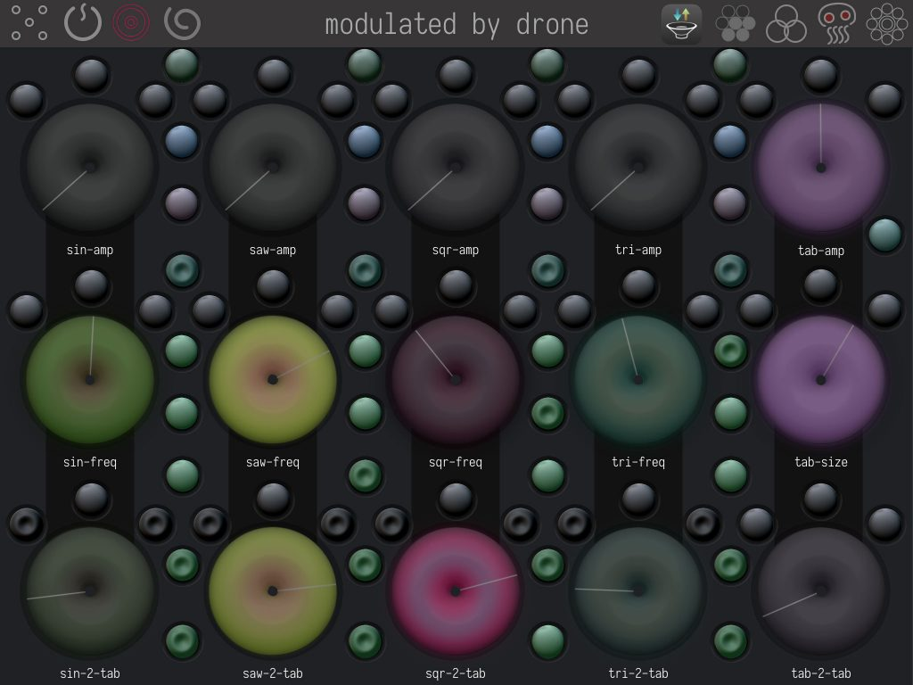

<!DOCTYPE html>
<html lang="en-US">
	<head >
		<title>ByMe</title>

		<meta charset="utf-8">
  		<meta name="viewport" content="initial-scale=1.0">
		<link rel="profile" href="http://gmpg.org/xfn/11">
		<link rel="stylesheet" href="https://maxcdn.bootstrapcdn.com/font-awesome/4.7.0/css/font-awesome.min.css">

		
		
		<link rel="stylesheet" href="wp-content/themes/under2ck/css/css/fontello.css">

		<link href="https://fonts.googleapis.com/css?family=Roboto:100&amp;subset=cyrillic,cyrillic-ext,latin-ext" rel="stylesheet">
		<link rel="shortcut icon" href="favicon.ico" type="image/x-icon">
		<link rel="icon" href="favicon.ico" type="image/x-icon">

</head >
<title>Self-a-Fuzz manual &#8211; ashshaosh.ru</title>
    <script type="text/javascript">
        <!--
        var postloopajax_ajaxurl = 'http://ashshaosh.ru/wp-admin/admin-ajax.php';
        var postloopajax_ajax_nonce = 'd15eb9edf1';
        var postloopajaxServer = "http://ashshaosh.ru/";
        var postloopajaxBaseUrl = "http://ashshaosh.ru/wp-content/plugins/post-loop-ajax";
        var postloopajaxlanguage = "en_US";   // en, ja
        // -->
    </script>
    <link rel="alternate" type="application/rss+xml" title="ashshaosh.ru &raquo; Feed" href="feed/index.html" />
<link rel="alternate" type="application/rss+xml" title="ashshaosh.ru &raquo; Comments Feed" href="comments/feed/index.html" />
<link rel='stylesheet' id='smart-posts-css'  href='http://ashshaosh.ru/wp-content/plugins/smart-posts/smart-posts.css?ver=5.1.4' type='text/css' media='all' />
<link rel='stylesheet' id='wp-block-library-css'  href='wp-includes/css/dist/block-library/style.min.css%3Fver=5.1.4.css' type='text/css' media='all' />
<link rel='stylesheet' id='bp-legacy-css-css'  href='wp-content/plugins/buddypress/bp-templates/bp-legacy/css/buddypress.min.css%3Fver=5.0.0.css' type='text/css' media='screen' />
<link rel='stylesheet' id='contact-form-7-css'  href='wp-content/plugins/contact-form-7/includes/css/styles.css%3Fver=5.1.5.css' type='text/css' media='all' />
<link rel='stylesheet' id='nbt-so-styles-css'  href='wp-content/plugins/netbase-widgets-for-siteorigin/assets/nbt-so-style.min.css%3Fver=1.0.css' type='text/css' media='all' />
<link rel='stylesheet' id='post-loop-ajax-css'  href='wp-content/plugins/post-loop-ajax/css/post-loop-ajax.css%3Fver=5.1.4.css' type='text/css' media='all' />
<link rel='stylesheet' id='spba-animate-css'  href='wp-content/plugins/so-page-builder-animate/css/animate.min.css%3Fver=1.css' type='text/css' media='all' />
<link rel='stylesheet' id='iw-defaults-css'  href='wp-content/plugins/widgets-for-siteorigin/css/defaults.css%3Fver=1.4.7.css' type='text/css' media='all' />
<link rel='stylesheet' id='wp-different-navigation-css-css'  href='wp-content/plugins/wp-different-navigation-on-each-page-and-post/assets/wp-different-navigation-css.css%3Fver=5.1.4.css' type='text/css' media='all' />
<link rel='stylesheet' id='_s-style-css'  href='wp-content/themes/under2ck/style.css%3Fver=5.1.4.css' type='text/css' media='all' />
<link rel='stylesheet' id='pt-tabs-style-css'  href='wp-content/plugins/tabs-widget-for-page-builder/assets/css/style.min.css%3Fver=1.2.1.css' type='text/css' media='all' />
<script type='text/javascript' src='wp-includes/js/jquery/jquery.js%3Fver=1.12.4'></script>
<script type='text/javascript' src='wp-includes/js/jquery/jquery-migrate.min.js%3Fver=1.4.1'></script>
<script type='text/javascript'>
/* <![CDATA[ */
var BP_Confirm = {"are_you_sure":"Are you sure?"};
/* ]]> */
</script>
<script type='text/javascript' src='wp-content/plugins/buddypress/bp-core/js/confirm.min.js%3Fver=5.0.0'></script>
<script type='text/javascript' src='wp-content/plugins/buddypress/bp-core/js/widget-members.min.js%3Fver=5.0.0'></script>
<script type='text/javascript' src='wp-content/plugins/buddypress/bp-core/js/jquery-query.min.js%3Fver=5.0.0'></script>
<script type='text/javascript' src='wp-content/plugins/buddypress/bp-core/js/vendor/jquery-cookie.min.js%3Fver=5.0.0'></script>
<script type='text/javascript' src='wp-content/plugins/buddypress/bp-core/js/vendor/jquery-scroll-to.min.js%3Fver=5.0.0'></script>
<script type='text/javascript'>
/* <![CDATA[ */
var BP_DTheme = {"accepted":"Accepted","close":"Close","comments":"comments","leave_group_confirm":"Are you sure you want to leave this group?","mark_as_fav":"Favorite","my_favs":"My Favorites","rejected":"Rejected","remove_fav":"Remove Favorite","show_all":"Show all","show_all_comments":"Show all comments for this thread","show_x_comments":"Show all comments (%d)","unsaved_changes":"Your profile has unsaved changes. If you leave the page, the changes will be lost.","view":"View","store_filter_settings":""};
/* ]]> */
</script>
<script type='text/javascript' src='wp-content/plugins/buddypress/bp-templates/bp-legacy/js/buddypress.min.js%3Fver=5.0.0'></script>
<script type='text/javascript' src='wp-content/plugins/post-loop-ajax/js/jquery-ui.min.js%3Fver=5.1.4'></script>
<script type='text/javascript' src='wp-content/plugins/post-loop-ajax/js/postloopajax.js%3Fver=5.1.4'></script>
<script type='text/javascript' src='wp-content/plugins/tabs-widget-for-page-builder/assets/js/main.min.js%3Fver=1.2.1'></script>
<link rel='https://api.w.org/' href='wp-json/index.html' />
<link rel="EditURI" type="application/rsd+xml" title="RSD" href="http://ashshaosh.ru/xmlrpc.php?rsd" />
<link rel="wlwmanifest" type="application/wlwmanifest+xml" href="wp-includes/wlwmanifest.xml" /> 
<meta name="generator" content="WordPress 5.1.4" />
<link rel="canonical" href="index.html%3Fp=5.html" />
<link rel='shortlink' href='index.html%3Fp=5.html' />
<link rel="alternate" type="application/json+oembed" href="http://ashshaosh.ru/wp-json/oembed/1.0/embed?url=http%3A%2F%2Fashshaosh.ru%2Fself-a-fuzz%2Fmanual%2F" />
<link rel="alternate" type="text/xml+oembed" href="http://ashshaosh.ru/wp-json/oembed/1.0/embed?url=http%3A%2F%2Fashshaosh.ru%2Fself-a-fuzz%2Fmanual%2F&#038;format=xml" />

	<script type="text/javascript">var ajaxurl = 'http://ashshaosh.ru/wp-admin/admin-ajax.php';</script>

<link rel='https://github.com/WP-API/WP-API' href='http://ashshaosh.ru/wp-json' />

<!-- Google Analytics by Lara - https://www.xtraorbit.com/wordpress-google-analytics-dashboard-widget/ -->
<script async src="https://www.googletagmanager.com/gtag/js?id=UA-46756963-1"></script>
<script>
  window.dataLayer = window.dataLayer || [];
  function gtag(){dataLayer.push(arguments);}
  gtag('js', new Date());
  gtag('config', 'UA-46756963-1', { 'anonymize_ip': true });
</script>
	
<meta name="reveal-modal-cfg-str-url" content="http://ashshaosh.ru"><meta name="reveal-modal-cfg-str" content="-82iu">
<body  class="bp-legacy page-template-default page page-id-5 page-child parent-pageid-9 no-js" >


<div id="holder" class="holder " style="">

  <div id="bymes" class="bymes">
    
     
<aside id="secondary" class="widget-area" role="complementary">

		 <section id="nav_menu-5" class="widget widget_nav_menu"><div class="menu-toptop-container"><ul id="menu-toptop" class="menu"><li id="menu-item-1328" class="menu-item menu-item-type-post_type menu-item-object-page menu-item-home menu-item-1328"><a href="index.html">0</a></li>
<li id="menu-item-1329" class="menu-item menu-item-type-post_type menu-item-object-page menu-item-1329"><a href="index.html%3Fp=15.html">A</a></li>
<li id="menu-item-1331" class="menu-item menu-item-type-post_type menu-item-object-page current-page-ancestor menu-item-1331"><a href="index.html%3Fp=9.html">B</a></li>
<li id="menu-item-1332" class="menu-item menu-item-type-post_type menu-item-object-page menu-item-1332"><a href="index.html%3Fp=306.html">C</a></li>
<li id="menu-item-1330" class="menu-item menu-item-type-post_type menu-item-object-page menu-item-1330"><a href="index.html%3Fp=1092.html">D</a></li>
<li id="menu-item-1736" class="menu-item menu-item-type-post_type menu-item-object-page menu-item-1736"><a href="index.html%3Fp=1700.html">E</a></li>
<li id="menu-item-1973" class="menu-item menu-item-type-post_type menu-item-object-page menu-item-1973"><a href="index.html%3Fp=1956.html">G</a></li>
<li id="menu-item-2080" class="menu-item menu-item-type-post_type menu-item-object-page menu-item-2080"><a href="index.html%3Fp=2024.html">H</a></li>
</ul></div></section>
</aside><!-- #secondary -->
 


  </div>

  <div id="content" class="pagecontent" style="background-image:url('');background-repeat: no-repeat;background-size: 100%;">
    
<article id="post-5" class="post-5 page type-page status-publish hentry">
	<header class="entry-header">
		<h1 class="entry-title">Self-a-Fuzz manual</h1>	</header><!-- .entry-header -->

	<div class="entry-content">
		<div class="tabs inmenu"><div class="wpdenpp_menu_outer"><ul id="menu-safm" class="menu"><li id="menu-item-157" class="menu-item menu-item-type-post_type menu-item-object-page current-page-ancestor current-page-parent menu-item-157"><a href="index.html%3Fp=9.html">About</a></li>
<li id="menu-item-158" class="menu-item menu-item-type-post_type menu-item-object-page current-menu-item page_item page-item-5 current_page_item menu-item-158"><a href="index.html%3Fp=5.html" aria-current="page">Manual</a></li>
<li id="menu-item-156" class="menu-item menu-item-type-post_type menu-item-object-page menu-item-156"><a href="index.html%3Fp=11.html">Examples</a></li>
<li id="menu-item-155" class="menu-item menu-item-type-post_type menu-item-object-page menu-item-155"><a href="index.html%3Fp=13.html">Reviews</a></li>
</ul></div></div>
<p>Many thanks to the Paulinko for help with the adaptation of this instructions to understandable English.</p>
<p>Here you can read full instruction for Self-a-Fuzz (SaF).<br />
If you still have questions after reading the manual, just  and look me up in social networks for support. </p>
<div class="accordion vertical">
<section id="basics">
<h2><a href="index.html%3Fp=5.html#basics">Basics.</a></h2>
<p>Self-a-Fuzz(SaF) consist of 3 audio modules: <strong>Noise generator</strong>, <strong>Mutonic</strong> (modulator) and <strong>Overdrive</strong>. All these modules is highlighted on screenshots below.</p>
<p><div class="aligncenter"><div data-carousel-extra='{"blog_id":1,"permalink":"http:\/\/ashshaosh.ru\/self-a-fuzz\/manual\/","likes_blog_id":114608420}' id='gallery-1' class='gallery galleryid-5 gallery-columns-4 gallery-size-large'><figure class='gallery-item'>
			<div class='gallery-icon landscape'>
				
			</div></figure><figure class='gallery-item'>
			<div class='gallery-icon landscape'>
				
			</div></figure><figure class='gallery-item'>
			<div class='gallery-icon landscape'>
				
			</div></figure><figure class='gallery-item'>
			<div class='gallery-icon landscape'>
				
			</div></figure>
		</div>
</div>
</p>
<p><strong>Noise generator</strong> is obviously for making noises. You can generate <strong>white</strong>, <strong>flicker</strong>(pink), a complex oscillator drone and use your initial clean <strong>input as a sound source</strong> and part of the mix. Audio can be processed farther along the signal chain with 3 parallel filters – <strong>bandpass</strong>, <strong>VCF</strong> and 9-line <strong>equaliser</strong>. </p>
<p><strong>Mutonic</strong> can mix your filtered audio with clean input. Eleven mix types are available either individually or in combination. There is a random button. You can even mix your dry audio input with the filtered input audio, and can create a thick fuzz. <strong>One knob</strong> on main view and <strong>section in Settings</strong> to control Mutonic.</p>
<p><strong>Overdrive</strong> is the final adjustment you can make to the sound chain–kick to mash or gently highlight some hidden parts of the soundscape.</p>
<p>All controls are organised in 4 views. Main “<strong>Route</strong>”, “<strong>Filters</strong>”, “<strong>Drone</strong>” and “<strong>Settings</strong>”. Screen shots of these views can be seen in the app description in the AppStore and on the <a href="index.html%3Fp=9.html">about page</a>.</p>
<p>Before diving deeper into the app, let’s look at typical SaF controls.</p>
</section>
<section id="controls">
<h2><a href="index.html%3Fp=5.html#controls">Controls.</a></h2>
<h3>Top bar buttons.</h3>
<p>Top line of controls are always visible, action buttons are on the left side and navigation buttons on the right. In other words, left buttons do something, right buttons – change what is displayed or hidden.</p>
<p class="aligncenter"></p>
<ol>
<li><strong>Randomise</strong> &#8211; tap once to randomise the displayed view (route, filters or drone), hold down to randomise all effects.</li>
<li><strong>Restart</strong> is to reload the audio-engine in case of unwanted behaviour.</li>
<li><strong>Record</strong> &#8211; start/stop recording to a wav file</li>
<li><strong>Save</strong> &#8211; save current effect setup as a preset with the current date and time as its name.</li>
<li><strong>Preset</strong> name &#8211; if you tap on the preset name, you’ll get a list of presets. You can change the preset name by tapping on the spiral icon, delete the preset by swiping left, or load the preset by tapping on it.</li>
<li><strong>Host</strong> icon &#8211; if you are connected to an IAA host app, this button will switch you to the IAA host app. The IAA host transport controls appear below the IAA host icon.</li>
<li><strong>Keyboard</strong> &#8211; displays or hides the internal keyboard. Use it to send notes as frequencies to drone oscillators and filters. </li>
<li><strong>Filters</strong> &#8211;  switches between Filters (colored circles) and signal Route views.</li>
<li><strong>Drones</strong> &#8211; switches to Drone view when eyes are red.</li>
<li><strong>Cog</strong> &#8211;  switches Settings view.</li>
</ol>
<p><h3>Knobs.</h3>
<p>In every app view you’ll find a usual knob – looks like donut.<br />
<br />
If it has a <strong>white</strong> line coming from the center – the knob is a <strong>valve</strong> (change it’s value from 0 to 1), if the line is <strong>black</strong> – the knob is a <strong>fader</strong> – the left and right positions are different or even opposite.</p>
<p>For example the input knob controls the input volume, but the closest knob “noise” is a fader, it controls the proportion of noise and clean input as a sound source. The fader can set which source is heard – source one, source two or some mix of the two sources.</p>
<p>There are 3 black randomiser buttons on top of every knob. Left one generates small values, middle is for the central part of the value range, right is for the maximum value range. Use these buttons when you want the knob to change its values automatically.<br />
       <br style="clear:both" /> </p>
<p><h3>Monitoring.</h3>
<p>
In the main view you’ll find 8 oscillographs to visualise sound from certain points in the route: <strong>input</strong>, <strong>noise</strong>, <strong>drone</strong>, <strong>before filters</strong>, <strong>after filters</strong>, <strong>after mutonic</strong>, <strong>after overdrive</strong> and <strong>output</strong>. I don’t recommend enabling too many of them at once because it’s a CPU% hungry process and can lead to unwanted stuttering in the interface or even audio on old devices.</p>
<p class="aligncenter"></p>
</section>
<section id="appviews">
<h2><a href="index.html%3Fp=5.html#appviews">Application views.</a></h2>
<p >
<div class="aligncenter"><div data-carousel-extra='{"blog_id":1,"permalink":"http:\/\/ashshaosh.ru\/self-a-fuzz\/manual\/","likes_blog_id":114608420}' id='gallery-2' class='gallery galleryid-5 gallery-columns-4 gallery-size-large'><figure class='gallery-item'>
			<div class='gallery-icon landscape'>
				
			</div></figure><figure class='gallery-item'>
			<div class='gallery-icon landscape'>
				
			</div></figure><figure class='gallery-item'>
			<div class='gallery-icon landscape'>
				
			</div></figure><figure class='gallery-item'>
			<div class='gallery-icon landscape'>
				
			</div></figure>
		</div>
</div>
</p>
<p><h3>Route.</h3>
<p>        This is the effect’s main view. Here you control how sound is routed and mixed. The way sound goes from input to output is along the black fat curve. This view contains only volume valves for our filters and “drone” fader, but they have many knobs to tweak and they’re reasonably provided in separate views. </p>
<p><h3>Filters.</h3>
<p>        This window contains knobs for controlling bandpass, VCF and equaliser, the fat black line shows how they’re grouped.</p>
<p><h3>Drone.</h3>
<p>        Oscillators grouped here in vertical lines and between them are optional buttons to change notes source. Additionally tab-osc has its controls in a separate section in Settings view.</p>
<p><h3>Settings.</h3>
<p>        This view sets device options, unlocks randomisers, polyphony order, table of tab-osc with options, lists recordings and mutonic’s switches. </p>
<p>Now we look at those views in detail to learn how to do all sorts of horrible things to your innocent guitar solo.</p>
</section>
<section id="theroute">
<h2><a href="index.html%3Fp=5.html#theroute">The Route.</a></h2>
<p>We follow the sound path knob by knob.</p>
<p class="aligncenter"></p>
<ol>
<li>    With first knob – “<strong>input</strong>” – you’ll set the volume of your source. </li>
<li> “<strong>Noise</strong>” is a fader between clean source and white-flicker noise generator. Set it to zero to disable noisegen, maximum value excludes clean as a sound source. </li>
<li>“<strong>Flicker</strong>” knob let’s you adjust balance between flicker and white noise sources. </li>
<li>“<strong>Drone</strong>” is the final type of audio before filters, this knob sets the proportion of drone output vs the results of previous manipulations.</li>
<li> 6. 7.  “<strong>Bandpass</strong>“, “<strong>VCF</strong>” and “<strong>eq9</strong>” are valves to gently let noise out in the desired amounts. If all of them are zero – noisegen will not produce any sound.</li>
<li style="list-style-type: none"></li>
<li style="list-style-type: none"></li>
<li>“<strong>Mutonic</strong>” fader defines the character of effect – set to the minimum, there is only filtered noise, set to the maximum, your input is shaped-modulated by this noise mix.</li>
<li>“<strong>Source</strong>” fader belongs to the “overdrive” section and controls the amount of your Clean vs Mutonic audio for overdrive processing. Set to the minimum value will use only “mutonic” as the source and possibly result in a fat mess as output.</li>
<li> 11. Knobs “<strong>balance</strong>” and “<strong>type</strong>” are faders between different types of overdrive.</li>
<li style="list-style-type: none"></li>
<li>“<strong>Drive</strong>” fader sets the balance between Mutonic result and Overdrive’s output. Here you can exclude Mutonic or Overdrive from the mix completely.</li>
<li>Raise “<strong>lopass</strong>” to increase the output of higher frequency sounds (reduce shaving of splinters and needles). Maximum value will exclude the lowpass effect.</li>
<li> &#8220;<strong>Clean</strong>&#8221; &#8211; last chance to add Clean sound to mix.</li>
<li>&#8220;<strong>Output</strong>&#8221; &#8211; final volume adjustment.</li>
</ol>
<p>These are all of the routings. Now that you’re familiar with the controls, let’s set aside the Drone and Filter views for a moment and focus on the app’s Settings.</p>
</section>
<section id="settingsview">
<h2><a href="index.html%3Fp=5.html#settingsview">Settings view.</a></h2>
<p> This view contains controls grouped by sections. <strong>Device setups</strong> has switches to control app behavior. <strong>Polyphony order</strong> are keyboard related options. <strong>Recordings</strong> is obvious :) <strong>Mutonic</strong> is for modulation type controls. Below is <strong>MIDI</strong> and “<strong>Limiter</strong>” section. <strong>Table oscillator</strong> is part of the Drone.</p>
<p class="aligncenter"></p>
<p><h3>Device setup.</h3>
<p>      <strong>Startup state</strong> consists of 3 switches to chose how the app starts up – with randomised effect, default preset or restored state from previous session.<br />
<strong>Knobs style</strong> adjust gesture to tweak knobs – horizontal swipe, vertical or by rotation.<br />
<strong>Randomisers unlocks</strong>. Initially randomisation is disabled for “input”, “clean”, “output” and “tab-size” knobs. Table size is cpu heavy and can brings unwanted stuttering on old devices. Other randomisers are not always needed so you can enable desired parts here as needed.<br />
To enable <strong>randomisation of “the randomise buttons”</strong> you need to switch certain controls on. They’re grouped by view and you can randomise buttons in the desired view only.<br />
If you want to <strong>randomise pitch detectors</strong> (drone ears), <strong>Polyphony order</strong> when you randomise Drone view or mutonic options (<strong>mod-s</strong>) when you do it for Routing – you’ll need to enable the appropriate switches for them.<br />
Other unlocks include “<strong>polyphonise ears</strong>” switch – it enables polyphony order for detected frequencies. It sounds different, just try to know when it’s useful; And “<strong>tab-size unlock</strong>” – enables changing of tab-osc’s size and its randomise buttons. It’s CPU-heavy and disabled by default due to old devices.
</p>
<p><h3>Polyphony order.</h3>
<p>      With this table you control the order of oscillators receiving notes from keyboards, you can exclude some oscillators from playing or make them react on every key press. Randomise the order constantly with black switches for random order.</p>
<p><h3>Recordings.</h3>
<p>      Just a list of recorded sessions. Tap to see menu with “rename”, “delete”, “copy to pasteboard” and “export to Audioshare” actions.</p>
<p><h3>Mutonic and under.</h3>
<p>      Change shaping/blending/modulation options here. Mix manually from 11 different types or run the randomiser to generate new combinations.<br />
Below this section you’ll also find “<strong>limiter</strong>” knob (use it when working with potentially loud sounds) and <strong>MIDI input</strong> channel setup. Left selector displays the channel SaF is receiving on, with right selector you can set up the channel SaF will be respond to for changing the frequency of oscillators and filters. Set the right selector to match the left selector. The MIDI settings will be saved when you create a preset in Self-a-Fuzz.
</p>
<p><h3>Additional buttons.</h3>
<p>      In centre of the view are CPU% and version labels. There are buttons to “launch tutorial”, “import default presets”, to “AppStore” and to “this site” links. </p>
<p>Before describing the “Table oscillator” section, let’s look at the Drone view itself to understand how it’s related.</p>
</section>
<section id="droneview">
<h2><a href="index.html%3Fp=5.html#droneview">Drone view.</a></h2>
<p class="aligncenter"></p>
<p>Here are the <strong>sine</strong>, <strong>saw</strong>, <strong>square</strong>, <strong>triangle</strong> and <strong>table</strong> oscillator controls. To configure the voice of the drone, the first four knobs are <strong>amplitude</strong>, <strong>frequency</strong> and <strong>send-to-table</strong> knobs. The tab-osc has “tab-size” instead of frequency. Since the tab-osc has a “sent to table” knob too – it can receive its output as input and create unusual feedback. “Tab-size” knob is locked by default, to unlock it you’ll need to enable the switch in the Settings view.
</p>
<p ><br />
Every oscillator (except table-osc) has a <strong>line of greenish switches</strong>. These are drone “ears” – pitch detection controls. Ears have 5 levels of sensitivity: the lower the switch – the lower the pitch.</p>
<p>      Right above the ears are switches for <strong>amplitude</strong> part <strong>from detection</strong> (dark green), step upwards – <strong>amplitude from keyboard</strong> (violet) and <strong>keyboards input</strong> for notes (blue). </p>
<p>Higher – green buttons (under the top bar) are to <strong>randomise</strong> changing of “<strong>ears levels</strong>” constantly.</p>
<p>Table can receive only amplitude values from ears and has only one switch for it.<br />
<br style="clear:both" /></p>
<p><h3>Table oscillator setup.</h3>
<p>We’re ready to come back to Settings. Tab-osc produces sound by reading a table. The table itself is placed in the Settings view. You can <strong>draw a wave by hand</strong> or use one of the buttons labeled <strong>a</strong>, <strong>b</strong>, <strong>c</strong>, <strong>d</strong> and <strong>e</strong> to fill the table with random data.<br />
“<strong>D</strong>” switch is to enable filling of the table with random values, “D” is for “dance”. This is a CPU-heavy process, be careful.<br />
“<strong>L</strong>” button switches on <strong>l</strong>ive recording to the table from other oscillators.
</p>
<p class="aligncenter"></p>
</section>
<section id="filtersview">
<h2><a href="index.html%3Fp=5.html#filtersview">Filters view.</a></h2>
<p>Glad you’re still here :)<br />
Remember our noise generator?<br />
All the mix of sound sources (white/flicker + drone + input) are effected by 3 parallel filters and to control them SaF has a special view. Here it is.</p>
<p class="aligncenter"></p>
<p>Set up <strong>frequencies</strong> and <strong>Q-factor</strong> for every filter.<br />
VCF also has a “<strong>type</strong>” fader to mix between different VCFs output.<br />
Adjust the values of the <strong>9 equaliser</strong> parts with coloured knobs to pass sound out through it.<br />
These are valves and will not let sound go through if all of them are set to zero. Q is affecting every valve of eq9.
</p>
<p>
Bandpass and VCF can <strong>receive notes</strong> from keyboards and via MIDI input, just like oscillators. Use the blue switch to enable this feature.
</p>
<p class="aligncenter"></p>
<p>That was the last part of the interface left to describe so to test our knowledge let’s make a cool preset together.
    </p>
</section>
<p></br></p>
<section id="example">
<h2><a href="index.html%3Fp=5.html#example">Example with listing.</a></h2>
<p>Step by step you can build a new preset from scratch with this guided audio example.<br />
Use the annotated player to understand what I’ve done to change the effect state, I posted comments inside the track and under the player.
       </p>
<p><iframe width="100%" height="600" scrolling="no" frameborder="no" src="https://w.soundcloud.com/player/?url=https%3A//api.soundcloud.com/tracks/313796967&amp;auto_play=false&amp;hide_related=false&amp;show_comments=true&amp;show_user=true&amp;show_reposts=false&amp;visual=true"></iframe></p>
<p>
Listing:<br />
<strong>0:00</strong> We loaded with all knobs in zero position.<br />
<strong>0:00 – 0:08</strong> Raise the “output”, “input” and “clean” to hear the source – D’n B loop<br />
<strong>0:08 – 0:25</strong> Go to the Filters view and press the “Randomise” button to have some output from noise-gen. On Route view for “bandpass”, “vcf” and “eq10” start randomisation in the middle.<br />
<strong>0:25 – 0:35</strong> “clean” is set to zero and now we hear our loop filtered. Slightly wavy, but too obscured with Lowpass.<br />
<strong>0:38 – 0:40</strong> Set “lopass” to half.<br />
<strong>0:40 – 0:55</strong> Go to Settings view and select in Mutonic “2”, “3” and “10”<br />
<strong>0:55 – 1:06</strong> In the Route view, raise “mutonic” to hear how the filtered loop modulates the original one<br />
<strong>1:25 – 1:31</strong> Raise the “source” (to send clean to Overdrive) and “drive” to hear the difference due to the effects of Overdrive and Mutonic<br />
<strong>1:38 – 1:45</strong> Set “source” to zero again to hear how it sounds – overdriven with Mutonic<br />
<strong>1:55</strong> Go to Settings and press Mutonic’s randomiser, now it’s alive, it has its own life<br />
<strong>2:00 – 2:08</strong> Set “drive” to zero and hear only dancing Mutonic<br />
<strong>2:10 – 2:40</strong> Go to Drone view and press all 4 top green buttons. Now oscillators receive notes as frequencies from pitch detector, but levels (octaves) of detection are switched randomly. Enable amplitude detection with dark green buttons for every oscillator except table, for now I leave the table untouched and it won’t play. Now the drone is ready to appear in the mix.<br />
<strong>2:40 – 2:50</strong> Get back to the Route view and raise the “drone” knob. Now we hear how the loop is modulated by Mutonic with sound generated by the Drone.<br />
<strong>3:15 – 3:26</strong> Set “mutonic” to zero to hear only the filtered Drone<br />
<strong>3:26</strong> – end We raise “clean” knob and hear our original loop.
    </p>
<p>
I hope these instructions were helpful and you become more and more familiar with Self-a-Fuzz.
</p>
<p>
Remember you are not alone in this journey, I’m always happy to hear about your experiences.</p>
</section>
</div>
<p>
:П:п</p>
	</div><!-- .entry-content -->

	</article><!-- #post-## -->

  </div>

    

</div>

<div class="footer aligncenter">
        <hr>
    	<a href="https://ashshaosh.ru">:П:п</a>
      <br><br>
    </div>

<div id="reveal-modal-id" class="reveal-modal" data-reveal><a class="close-reveal-modal">&#215;</a></div><style>#reveal-modal-id{background-color:#222;border:none !important}.reveal-modal-bg{background:#000 !important;opacity:0.50 !important}.close-reveal-modal{color:#B1AFAF !important}</style>	<script>
	jQuery(document).ready(function($){
		'use strict';
		if ( 'function' === typeof WOW ) {
			new WOW().init();
		}
	});
	</script>
	<link rel='stylesheet' id='reveal-modal-css-css'  href='wp-content/plugins/reveal-modal/assets/css/foundation.min.css%3Fver=5.1.4.css' type='text/css' media='all' />
<link rel='stylesheet' id='jetpack-carousel-css'  href='wp-content/plugins/carousel-without-jetpack/carousel/jetpack-carousel.css%3Fver=20120629.css' type='text/css' media='all' />
<!--[if lte IE 8]>
<link rel='stylesheet' id='jetpack-carousel-ie8fix-css'  href='http://ashshaosh.ru/wp-content/plugins/carousel-without-jetpack/carousel/jetpack-carousel-ie8fix.css?ver=20121024' type='text/css' media='all' />
<![endif]-->
<script type='text/javascript' src='wp-includes/js/comment-reply.min.js%3Fver=5.1.4'></script>
<script type='text/javascript'>
/* <![CDATA[ */
var wpcf7 = {"apiSettings":{"root":"http:\/\/ashshaosh.ru\/wp-json\/contact-form-7\/v1","namespace":"contact-form-7\/v1"}};
/* ]]> */
</script>
<script type='text/javascript' src='wp-content/plugins/contact-form-7/includes/js/scripts.js%3Fver=5.1.5'></script>
<script type='text/javascript' src='wp-content/plugins/netbase-widgets-for-siteorigin/assets/js/accordion.min.js%3Fver=1.0'></script>
<script type='text/javascript' src='wp-content/plugins/netbase-widgets-for-siteorigin/assets/app.min.js%3Fver=1.0'></script>
<script type='text/javascript' src='wp-content/plugins/post-loop-ajax/js/jquery.cookie.js%3Fver=1.4.1'></script>
<script type='text/javascript' src='wp-content/plugins/so-page-builder-animate/js/wow.min.js%3Fver=1'></script>
<script type='text/javascript' src='wp-content/themes/under2ck/js/navigation.js%3Fver=20151215'></script>
<script type='text/javascript' src='wp-content/themes/under2ck/js/skip-link-focus-fix.js%3Fver=20151215'></script>
<script type='text/javascript' src='wp-includes/js/wp-embed.min.js%3Fver=5.1.4'></script>
<script type='text/javascript' src='wp-content/plugins/reveal-modal/assets/js/foundation.js%3Fver=5.1.4'></script>
<script type='text/javascript' src='wp-content/plugins/reveal-modal/assets/js/reveal.js%3Fver=5.1.4'></script>
<script type='text/javascript' src='wp-content/plugins/carousel-without-jetpack/carousel/spin.js%3Fver=5.1.4'></script>
<script type='text/javascript' src='wp-content/plugins/carousel-without-jetpack/carousel/jquery.spin.js%3Fver=5.1.4'></script>
<script type='text/javascript'>
/* <![CDATA[ */
var jetpackCarouselStrings = {"widths":[370,700,1000,1200,1400,2000],"is_logged_in":"","lang":"en","ajaxurl":"http:\/\/ashshaosh.ru\/wp-admin\/admin-ajax.php","nonce":"d002e2443e","display_exif":"1","display_geo":"1","background_color":"black","comment":"Comment","post_comment":"Post Comment","write_comment":"Write a Comment...","loading_comments":"Loading Comments...","download_original":"View full size <span class=\"photo-size\">{0}<span class=\"photo-size-times\">\u00d7<\/span>{1}<\/span>","no_comment_text":"Please be sure to submit some text with your comment.","no_comment_email":"Please provide an email address to comment.","no_comment_author":"Please provide your name to comment.","comment_post_error":"Sorry, but there was an error posting your comment. Please try again later.","comment_approved":"Your comment was approved.","comment_unapproved":"Your comment is in moderation.","camera":"Camera","aperture":"Aperture","shutter_speed":"Shutter Speed","focal_length":"Focal Length","comment_registration":"0","require_name_email":"1","login_url":"http:\/\/ashshaosh.ru\/wp-login.php?redirect_to=http%3A%2F%2Fashshaosh.ru%2Fself-a-fuzz%2Fmanual%2F","local_comments_commenting_as":"<fieldset><label for=\"email\">Email (Required)<\/label> <input type=\"text\" name=\"email\" class=\"jp-carousel-comment-form-field jp-carousel-comment-form-text-field\" id=\"jp-carousel-comment-form-email-field\" \/><\/fieldset><fieldset><label for=\"author\">Name (Required)<\/label> <input type=\"text\" name=\"author\" class=\"jp-carousel-comment-form-field jp-carousel-comment-form-text-field\" id=\"jp-carousel-comment-form-author-field\" \/><\/fieldset><fieldset><label for=\"url\">Website<\/label> <input type=\"text\" name=\"url\" class=\"jp-carousel-comment-form-field jp-carousel-comment-form-text-field\" id=\"jp-carousel-comment-form-url-field\" \/><\/fieldset>"};
/* ]]> */
</script>
<script type='text/javascript' src='wp-content/plugins/carousel-without-jetpack/carousel/jetpack-carousel.js%3Fver=20140505'></script>

	</div><!-- #content -->


</div><!-- #page -->


<script type="text/javascript">


window.onload = clearCurrentLink;
window.onload =removeNode;

function clearCurrentLink(){
    var a = document.getElementsByTagName("A");
    for(var i=0;i<a.length;i++){
        if(a[i].href.split("#")[0] == window.location.href.split("#")[0]){
            removeNode(a[i]);
        }
    }
}

function removeNode(n){
    if(n.hasChildNodes()){
        for(var i=0;i<n.childNodes.length;i++){
            n.parentNode.insertBefore(n.childNodes[i].cloneNode(true),n);
        }
    }
    n.parentNode.removeChild(n);
}

add_filter('nav_menu_css_class' , 'special_nav_class' , 10 , 2);

function special_nav_class ($classes, $item) {
    if (in_array('current-menu-item', $classes) ){
        $classes[] = 'active ';
    }
    return $classes;
}


</script>


</body>
</html>